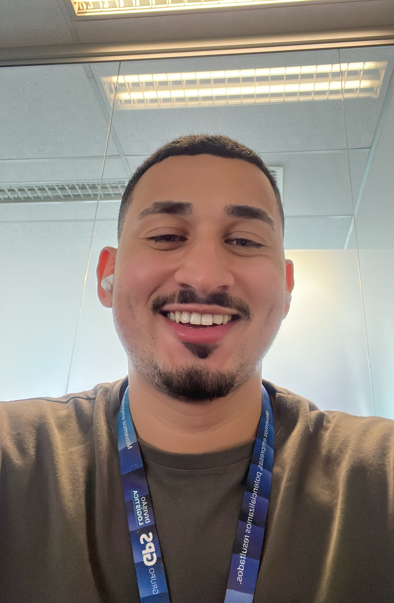
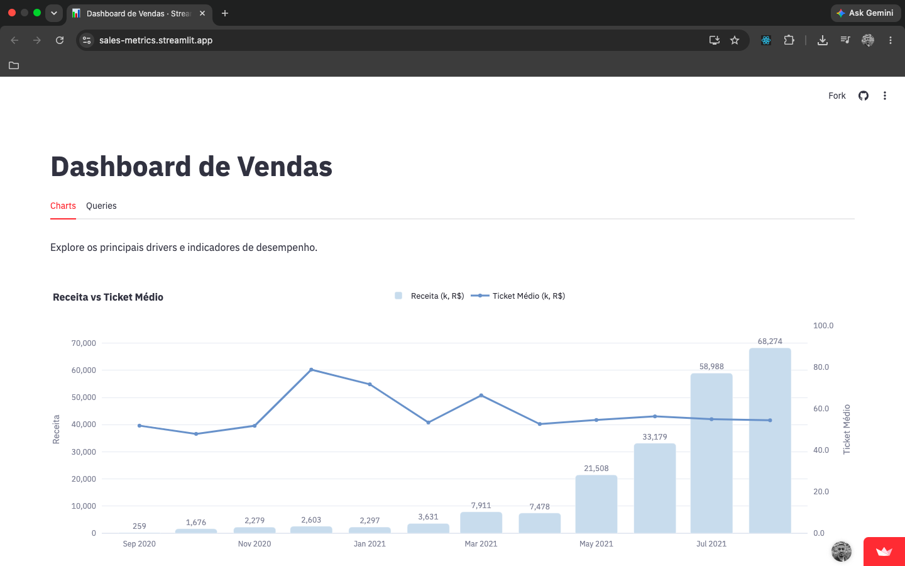

Analista de Dados
Analista com experiência em logística e na área comercial do Grupo GPS, empresa especializada em serviços terceirizados. Como Analista Comercial, desenvolvi uma ferramenta de automação em Excel que reduziu em 80% o tempo de elaboração de propostas. Antes, como Analista de Projetos, trabalhei com mapeamento de processos (BPMN), Cronoanálise e indicadores para áreas técnicas e gestores.
Atualmente direciono essa base para a análise de dados, resolvendo problemas de negócio com SQL, Python e Power BI. Meu projeto mais recente é um dashboard analítico de vendas com PostgreSQL e Streamlit, que você pode conferir no portfólio.
Baixar currículo-

Gestão de Contratos
Dashboard interativo projetado para explorar dados, cruzar informações estratégicas e extrair insights valiosos no próprio Excel.
-

Dashboard de Vendas de Automóveis
Projeto prático de análise de dados onde dados brutos armazenados em PostgreSQL foram transformados em um painel interativo dinâmico.
Vamos conversar?
Fique à vontade para entrar em contato.
- E-mail contatowildermiranda@gmail.com
- LinkedIn linkedin.com/in/wildermiranda
- GitHub github.com/wildermiranda